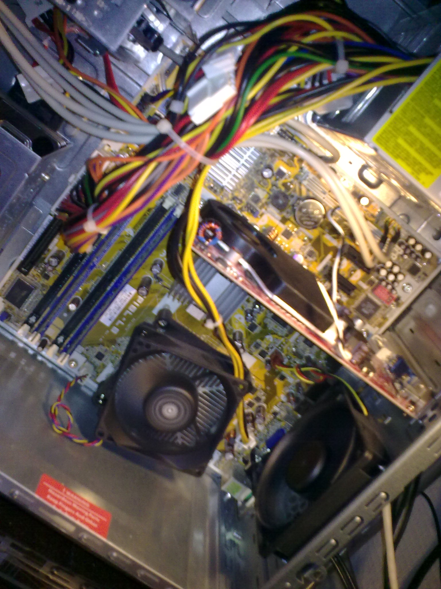

Most of my items have to do this computers but at some point my pc will decay in performance and I will nee a new one. I've had my most recent pc for at least 2 years now and it shows but it isn't getting too bad, it's actually still a really decent computer but not for the more modern graphics in gaming. That is most why I want a new pc, it's for playing my video games with good graphics and more performance.
Apex Gaming Pc's (prebuilt pc website)

Price: $2000